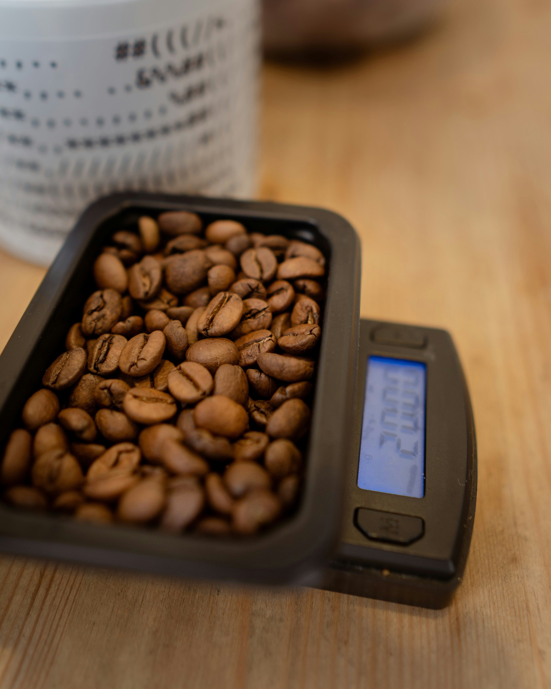

Pokedex Image Recognition

Trained up a image recognition model to recognize all 150 pokemon from generation 1 and hooked it up to an arduino so as to recognize pictures take by said arduino
Website

Made a simple compilation all the recent projects undertaken by me as well as a brief introduction to me
Discord Bot

Made a simple discord bot which has predetermined responses to certain commands as well as the ability to roll dice
BMI Calculator

Made a simple BMI calculator in flutter which functions in both imperial and metric system and the result are color coded
To-Do List

Made a simple To Do list app in flutter reminiscent of a notes app but with the ability to add time as well as checkmarks indicating completion
Tic Tac Toe

Made a simple Tic Tac Toe game using python and tkinter